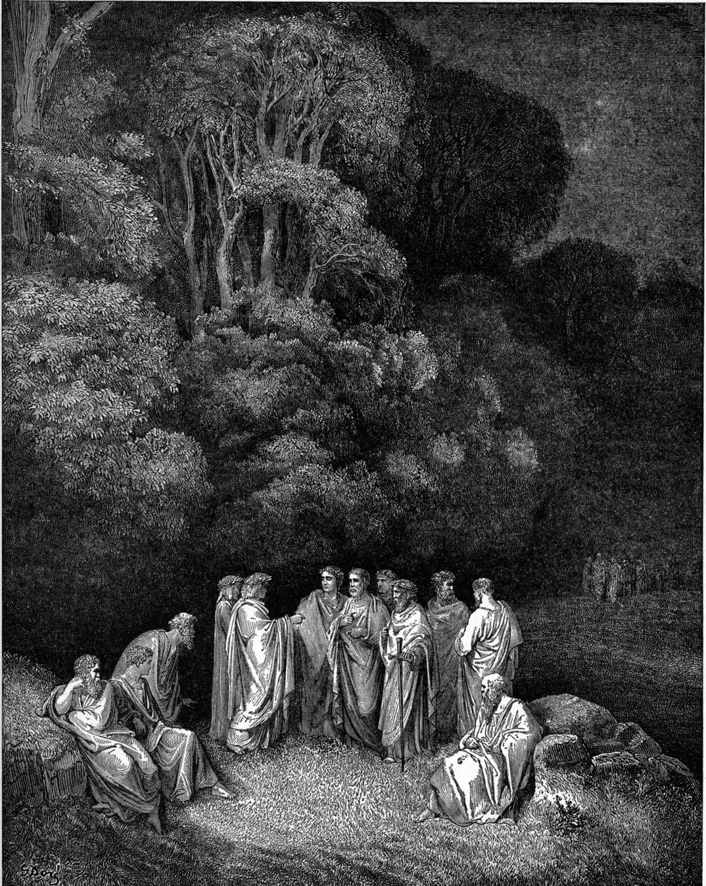
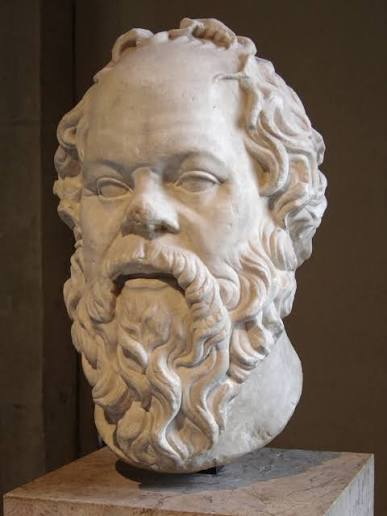
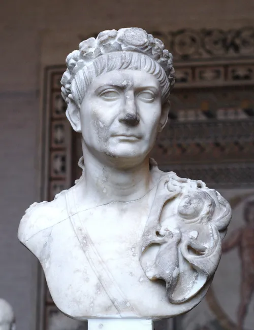

이제 많이 퍼진 갈릴레오에 대한 진실인
갈릴레오는 사실 가톨릭과 사이가 좋았다
당시 교황 우르바노 8세도 갈릴레오의 지지자였으며 주변 성직자들도 지동설에 관심이 많았다
지동설때문에 재판 갔다 x -> 지지자인 교황을 천동설 지지자라고 디스해서 교황청 모독죄로 재판 갔다 o
감옥에 갔다 x -> 매우 느슨한 가택연금이었다 o
그냥 중세를 갓 벗어난 그 당시 기술과 과학이론 수준으로는 아직은 천동설이 조금 더 정확했을 뿐이다
등등
기독교측은 사실 당시 기준으로 합리적이었고 상식적이었고 신사적이었다는게 정론인데
그보다 300년 전인 1300년대에 나온 단테의 신곡을 보면
상식적인 면을 더 볼 수 있다
이런 거 보면 예수를 안 믿으면, 어떤 이유든 지옥간다는 개독의 주장들이 있는데
오히려 더 야만적인 시대의 작품, 문명 자체가 기독교 문명인 시대에 산 지식인인 단테의 신곡을 보면

지옥의 일부긴 하지만 실상은 지옥도 아니고 천국도 아닌 림보(변옥)가 나온다
여기는 예수를 믿을 기회가 없던 사람들
-예수 전에 태어난 사람
-기독교가 아직 퍼지지 못한 곳의 사람
-세례 받기 전의 아기들
등등이 가는 곳인데
대표적으로 그리스 시대의 영웅인 헥토르
못생겼다고 알려진 소크라테스

등, 대표적으로 그리스 로마 시대의 영웅들, 철학자, 시인들이 이 림보에 있으며
심지어
기독교를 적대하고 기독교 기준 일단은 이교도인
살라흐 앗 딘도
이교도이자 기독교를 적대한 자이지만 의로운 인물이라며
지옥이 아닌 이 림보에 있다
그렇다면 림보는 어떤 곳이냐?
따스한 햇살이 내리쬐고 신선한 바람이 불며 풀밭이 펼쳐져 있는
영원히 행복하게 살 수 있는 곳이다
그 당시 기준으로 나름대로의 낙원이자 이상향 같은 곳이라 보면 된다
심지어 그 주민 중 가장 위대한 인물들은 7겹의 벽에 둘러싸인 성에서 사는데
이 7겹의 벽은 4개의 덕인 사려, 공의, 강의, 절제와 3가지 앎인 총명, 지식, 지혜를 상징한다고 하니
대충 어떤 취급을 받는 곳인지 짐작할 수 있다
그래도 일단은 지옥의 일부긴 하고 기독교 문명이자 기독교 사회의 지식인인 단테가 쓴거라
지옥답게 벌이 있는데
그 벌이 뭐냐면
천국 가서 하나님을 보지 못하는게 벌이다
그래서 림보의 주민들은 하나님을 볼 수 없다며 탄식한다고 한다
근데 이것도 영구 감금인 다른 지옥 층들과는 다른게
운이 좋으면 림보에서 천국으로 주소이전도 해준다

로마 5현제 중 하나인 트라야누스가 "이교도"라서 림보로 갔지만 천국으로 주소이전한 인물 중 하나다
어쨌든 정식 신학 내용은 아니긴 하고
그저 한번쯤은 꼭 읽어봐야 할 개 쩌는 책일 뿐이긴 하지만
단테의 신곡과 그 당시 지식인들, 나름 양피지 좀 펼쳐봤다는 자들의 시각이 여기서 크게 다르진 않았으리라
이게 700년 전의 이야기다
어디까지나 종교 사회고 뭐고 다 사람이 모이고 사람이 사는 데다
물론 사람은 사람이라서
나중에 면죄부 같은 거 파는 등 뻘짓도 해서 종교개혁도 일어나긴 하지만
사람이 문제지 사람이
어쨌든 정상인의 상식은 언제나 어디서나 존재하는 법이다
ㅇㅇ 그래서 연옥영혼을 위한 기도도 따로 있음